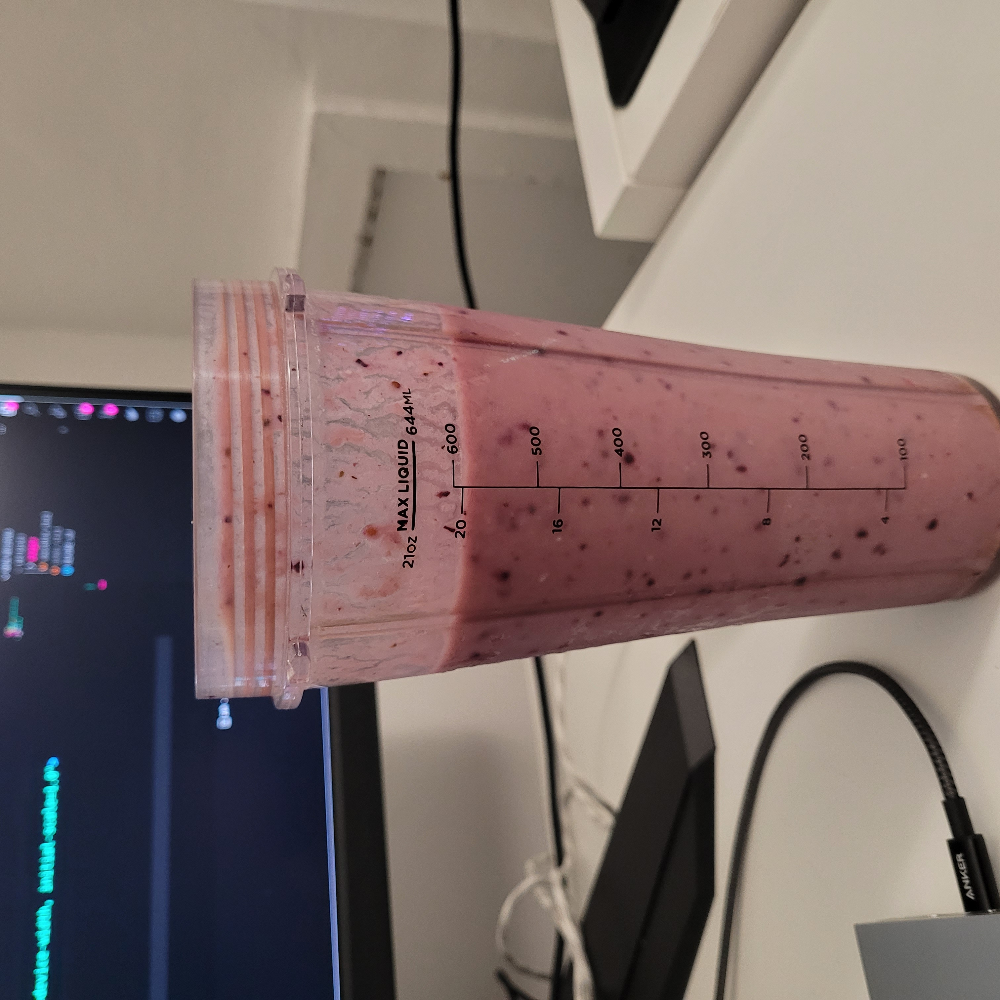

Smoothie

Description
A protein rich banana and berries drink.
Ingredients
- 01 un - Banana
- 400+ ml - Water
- 20 g - Oats
- 20 g - Vegan Protein Powder
- 08 g - Peanut Powder
- 50 g - Mixed Frozen Berries
Steps
- Add the banana (I suggest peeled) to the blender
- Add the water
- Add the oats
- Add the powders (peanut and protein)
- Add the frozen berries
- Depending on the size of the banana and how you like the consistency add more water
- Blend it
- Serve
Notes
You can keep the bananas in the freezer to get a colder drink and silkier texture.
You should vary the amount of berries and water depending on the size of the banana. Do not vary the oats or powders though.
The ripest the banana is, the sweeter your drink will be. If you feel it's not ripe enough, you could sneak in a dried pitted date to get the taste right.